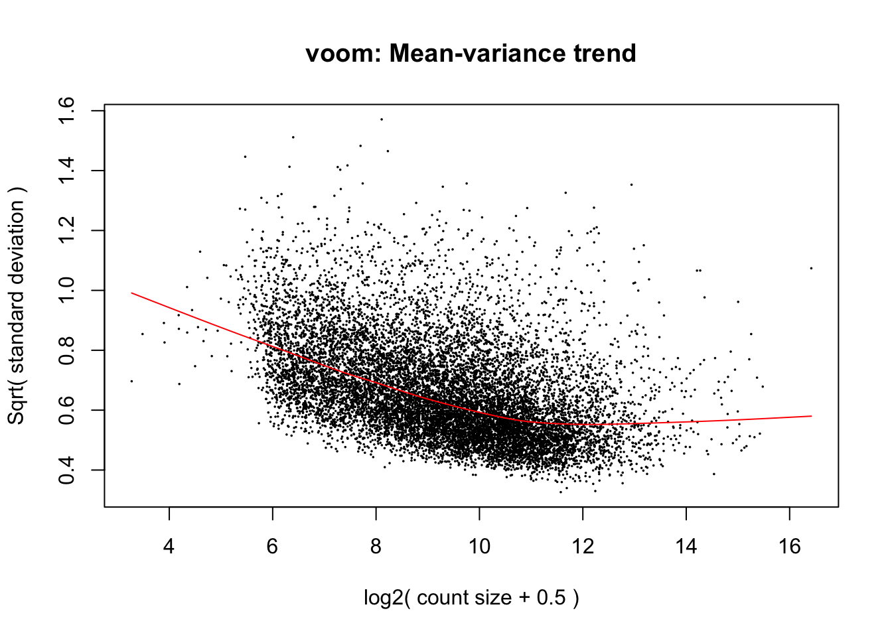
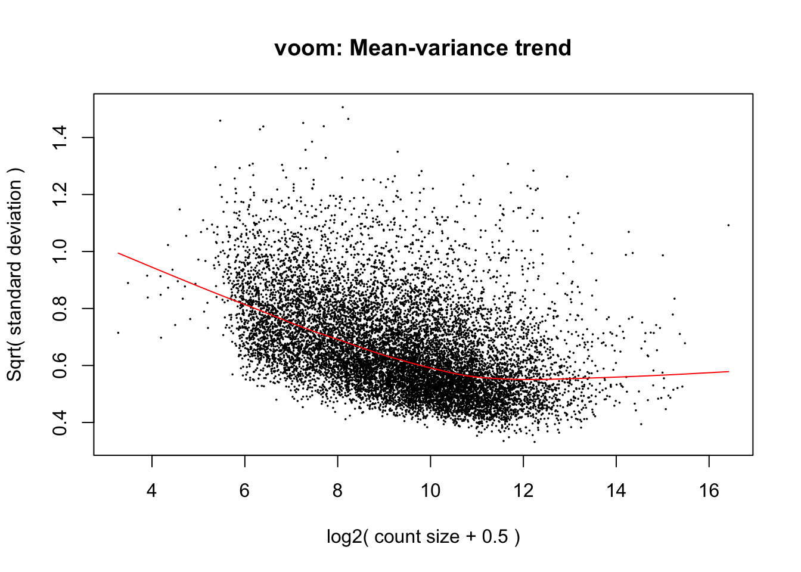

Test_DE_genes
Lauren Blake
August 3, 2016
- Pairwise comparisons
- Find tissue specific genes found in each species first and then combine the results in a Venn Diagram (no RIN score)
- Find tissue specific genes found in each species first and then combine the results in a Venn Diagram (no RIN score)
- What happens when we combine groups? (Human and Chimp versus Rhesus)
- What happens when we combine groups? (Human versus Chimp and Rhesus)
The goal of this script is to find a list of differentially expressed genes between tissues and between species.
# Load libraries
library("gplots")Warning: package 'gplots' was built under R version 3.2.4
Attaching package: 'gplots'The following object is masked from 'package:stats':
lowesslibrary("ggplot2")Warning: package 'ggplot2' was built under R version 3.2.5library("RColorBrewer")
library("scales")Warning: package 'scales' was built under R version 3.2.5library("edgeR")Warning: package 'edgeR' was built under R version 3.2.4Loading required package: limmaWarning: package 'limma' was built under R version 3.2.4library("R.utils")Warning: package 'R.utils' was built under R version 3.2.5Loading required package: R.ooWarning: package 'R.oo' was built under R version 3.2.5Loading required package: R.methodsS3Warning: package 'R.methodsS3' was built under R version 3.2.3R.methodsS3 v1.7.1 (2016-02-15) successfully loaded. See ?R.methodsS3 for help.R.oo v1.21.0 (2016-10-30) successfully loaded. See ?R.oo for help.
Attaching package: 'R.oo'The following objects are masked from 'package:methods':
getClasses, getMethodsThe following objects are masked from 'package:base':
attach, detach, gc, load, saveR.utils v2.5.0 (2016-11-07) successfully loaded. See ?R.utils for help.
Attaching package: 'R.utils'The following object is masked from 'package:utils':
timestampThe following objects are masked from 'package:base':
cat, commandArgs, getOption, inherits, isOpen, parse, warningslibrary("plyr")Warning: package 'plyr' was built under R version 3.2.5library("limma")
library("VennDiagram")Warning: package 'VennDiagram' was built under R version 3.2.5Loading required package: gridLoading required package: futile.loggerWarning: package 'futile.logger' was built under R version 3.2.5source("functions.R")
# Load colors
colors <- colorRampPalette(c(brewer.pal(9, "Blues")[1],brewer.pal(9, "Blues")[9]))(100)
pal <- c(brewer.pal(9, "Set1"), brewer.pal(8, "Set2"), brewer.pal(12, "Set3"))
samples <- read.delim("../data/Sample_info_RNAseq_limma.txt")
# Eliminate H1H
samples <- samples[-17,]
dim(samples)[1] 47 4# Make labels
labels <- paste(samples$Species, samples$Tissue, sep=" ")Pairwise comparisons
## Make the contrast matrix
species <- samples$Species
tissue <- samples$Tissue
# Rename columns of the contrast matrix
design <- model.matrix(~ species*tissue)
colnames(design)[1] <- "Intercept"
colnames(design) <- gsub("speciesHuman", "Human", colnames(design))
colnames(design) <- gsub("speciesRhesus", "Rhesus", colnames(design))
colnames(design) <- gsub("tissuekidney", "Kidney", colnames(design))
colnames(design) <- gsub("tissueliver", "Liver", colnames(design))
colnames(design) <- gsub("tissuelung", "Lung", colnames(design))
colnames(design) <- gsub(":", ".", colnames(design))# Load count data
counts_genes_in_cutoff <- read.delim("../data/counts_12184.txt")
# TMM
dge_in_cutoff <- DGEList(counts=as.matrix(counts_genes_in_cutoff), genes=rownames(counts_genes_in_cutoff), group = as.character(t(labels)))
dge_in_cutoff <- calcNormFactors(dge_in_cutoff)
cpm_in_cutoff <- cpm(dge_in_cutoff, normalized.lib.sizes=TRUE, log=TRUE)
head(cpm_in_cutoff) C1H C1K C1Li C1Lu C2H C2K
ENSG00000000003 4.569101 6.484481 8.260731 5.481561 4.686636 6.076562
ENSG00000000419 5.842023 5.217972 5.937465 5.478545 5.681016 5.100404
ENSG00000000457 4.560130 5.214732 5.902494 4.972557 4.834031 5.289413
ENSG00000000460 1.506846 1.869887 2.080244 2.308985 1.660573 1.968249
ENSG00000000938 5.611783 3.819613 5.091152 7.550720 2.533135 4.178135
ENSG00000000971 6.877100 4.451824 11.368082 6.100181 6.135730 4.887383
C2Li C2Lu C3H C3K C3Li C3Lu
ENSG00000000003 8.029471 4.564496 4.915377 6.406310 7.784365 5.875983
ENSG00000000419 5.813444 5.199855 5.675979 5.179418 6.413682 5.596709
ENSG00000000457 6.545270 4.985922 4.618657 5.204247 6.498053 5.168988
ENSG00000000460 2.324903 2.023533 1.580465 1.461635 2.344190 2.124699
ENSG00000000938 5.388459 8.083442 4.965147 4.223500 5.204433 7.160345
ENSG00000000971 11.387090 6.246512 5.606820 4.941061 11.420166 5.990777
C4H C4K C4Li C4Lu H1K H1Li
ENSG00000000003 4.235754 6.503717 8.453727 5.430223 6.864660 6.576082
ENSG00000000419 5.785414 5.257938 5.881536 5.321782 5.588152 6.082997
ENSG00000000457 4.645293 5.023223 6.597499 5.263806 4.285007 4.953825
ENSG00000000460 1.456629 1.826787 2.206829 2.476664 2.766766 4.989335
ENSG00000000938 3.638952 3.621239 4.580376 7.717763 4.059344 4.479943
ENSG00000000971 6.845219 5.957838 11.330910 6.421417 6.585546 11.216641
H1Lu H2H H2K H2Li H2Lu H3H
ENSG00000000003 5.099004 3.681088 7.205567 6.638944 4.181104 3.54360583
ENSG00000000419 5.810855 5.606326 5.461678 5.838444 5.313450 5.75090978
ENSG00000000457 4.502116 3.406682 4.158467 4.450840 4.201852 4.44063190
ENSG00000000460 3.318021 1.892216 1.978501 2.657920 2.553081 -0.07576077
ENSG00000000938 7.878166 5.560041 3.740312 5.990299 6.968892 4.09684184
ENSG00000000971 7.561408 6.363288 4.736443 9.409472 7.310814 6.22507411
H3K H3Li H3Lu H4H H4K H4Li
ENSG00000000003 7.091569 7.735945 5.290097 4.284175 6.371782 6.590115
ENSG00000000419 5.854940 6.216818 5.009845 6.244527 5.608088 5.834153
ENSG00000000457 4.722790 4.993719 3.999170 3.312369 4.087480 5.176119
ENSG00000000460 2.990603 3.237751 2.457261 1.629959 1.983141 3.137731
ENSG00000000938 2.643134 5.741066 6.912746 4.918491 3.820852 6.899117
ENSG00000000971 5.313255 10.346500 7.124250 6.927089 6.032612 10.197598
H4Lu R1H R1K R1Li R1Lu R2H
ENSG00000000003 4.463456 4.356369 6.932932 8.3343252 5.915547 4.625348
ENSG00000000419 5.350423 5.464082 5.391834 5.8259430 4.887057 5.295517
ENSG00000000457 4.173647 4.285211 5.024853 5.1435415 4.837373 4.311664
ENSG00000000460 2.604439 1.284359 1.555258 -0.1735364 2.480549 1.415808
ENSG00000000938 8.249002 1.837210 2.564210 3.8041639 6.515323 2.327061
ENSG00000000971 8.277236 4.027912 6.576019 12.1322643 7.445976 5.571685
R2K R2Li R2Lu R3H R3K R3Li
ENSG00000000003 7.134183 8.640291 5.654663 4.469039 7.166047 8.202424
ENSG00000000419 5.043831 5.723120 4.881450 5.462958 5.367362 5.990303
ENSG00000000457 5.154832 5.511121 5.265617 4.241449 5.139792 5.359535
ENSG00000000460 1.320003 1.496941 2.394895 1.656614 1.874414 1.413727
ENSG00000000938 2.681748 3.672247 6.583375 2.870792 2.267214 3.636318
ENSG00000000971 6.778700 11.778253 7.231996 5.150488 6.054215 12.087241
R3Lu R4H R4K R4Li R4Lu
ENSG00000000003 5.453490 4.892515 7.094406 7.705335 5.361237
ENSG00000000419 4.956114 5.427374 5.215706 5.464168 5.041757
ENSG00000000457 5.165431 4.509684 5.144266 5.318210 4.828352
ENSG00000000460 2.577251 1.088179 1.509418 1.534185 2.847559
ENSG00000000938 6.845883 2.474777 2.310571 4.509304 6.834845
ENSG00000000971 7.258258 6.408881 6.469038 11.695479 7.298202hist(cpm_in_cutoff, xlab = "Log2(CPM)", main = "Log2(CPM) values for genes meeting the filtering criteria", breaks = 100 )
# Voom with individual as a random variable
cpm.voom.cyclic <- voom(dge_in_cutoff, design, normalize.method="cyclicloess", plot=T)
#corfit <- duplicateCorrelation(cpm.voom.cyclic, design, block=samples$Individual)
corfit$consensus <- 0.2006188
# Final voom on filtered data
cpm.voom.cyclic <- voom(dge_in_cutoff, design, normalize.method="cyclicloess", plot=TRUE, block=samples$Individual, correlation=corfit$consensus)
Fit the linear model
fit.cyclic.norm <- lmFit(cpm.voom.cyclic, design, plot = TRUE, block=samples$Individual, correlation=corfit$consensus)
fit.cyclic.norm <- eBayes(fit.cyclic.norm)
# MA Plots
## If 'MA' is an 'MArrayLM' object, then the plot is a fitted model MA-plot in which the estimated coefficient is on the y-axis and the average A-value is on the x-axis.
limma::plotMA(fit.cyclic.norm, array=1, xlab="average coefficient", ylab="estimated coefficient")Warning in plot.window(...): "array" is not a graphical parameterWarning in plot.xy(xy, type, ...): "array" is not a graphical parameterWarning in axis(side = side, at = at, labels = labels, ...): "array" is not
a graphical parameter
Warning in axis(side = side, at = at, labels = labels, ...): "array" is not
a graphical parameterWarning in box(...): "array" is not a graphical parameterWarning in title(...): "array" is not a graphical parameter
## - Potential caveat: variances could be different between human, chimp and rhesus (see Gordon Smyth email, 7 June 2013).
## We look at the standard error for each condition
hist(fit.cyclic.norm$stdev.unscaled * fit.cyclic.norm$sigma, breaks=100)
hist(log2(fit.cyclic.norm$stdev.unscaled * fit.cyclic.norm$sigma), breaks=100)
boxplot(log2(fit.cyclic.norm$stdev.unscaled * fit.cyclic.norm$sigma))
## This seems to be pretty comparable between conditions. The human heart is higher, probably because of H1H missing and H3H with a bit strange behavior
stderror <- log2(fit.cyclic.norm$stdev.unscaled * fit.cyclic.norm$sigma)
boxplot(list(stderror[,1:4], stderror[,5:8], stderror[,9:12]))
## A bit higher for human, and a bit lower for rhesus
boxplot(list(stderror[,2:4], stderror[,6:8], stderror[,8:12])) ## excluding heart samples 
# In the contrast matrix, we have many comparisons for species and tissues individually
# Note: baseline is chimp heart
cm1 <- makeContrasts(HvC_Liver = Human + Liver + Human.Liver - Liver,
HvC_Lung = Human + Lung + Human.Lung - Lung,
HvC_Heart = Human,
HvC_Kidney = Human + Kidney + Human.Kidney - Kidney,
HvR_Liver = Human + Liver + Human.Liver - (Rhesus + Liver + Rhesus.Liver),
HvR_Lung = Human + Lung + Human.Lung - (Rhesus + Lung + Rhesus.Lung),
HvR_Heart = Human - Rhesus,
HvR_Kidney = Human + Kidney + Human.Kidney - (Rhesus + Kidney + Rhesus.Kidney),
CvR_Liver = Liver - (Rhesus + Liver + Rhesus.Liver),
CvR_Lung = Lung - (Rhesus + Lung + Rhesus.Lung),
CvR_Heart = Rhesus,
CvR_Kidney = Kidney - (Rhesus + Kidney + Rhesus.Kidney),
H_HeartvLi = Human - (Human + Liver + Human.Liver),
H_HeartvLu = Human - (Human + Lung + Human.Lung),
H_HeartvK = Human - (Human + Kidney + Human.Kidney),
H_LivLu = (Human + Liver + Human.Liver) - (Human + Lung + Human.Lung),
H_LivK = (Human + Liver + Human.Liver) - (Human + Kidney + Human.Kidney),
H_LuvK = (Human + Lung + Human.Lung) - (Human + Kidney + Human.Kidney),
C_HeartvLi = Liver,
C_HeartvLu = Lung,
C_HeartvK = Kidney,
C_LivLu = Liver - Lung,
C_LivK = Liver - Kidney,
C_LuvK = Lung - Kidney,
R_HeartvLi = Rhesus - (Rhesus + Liver + Rhesus.Liver),
R_HeartvLu = Rhesus - (Rhesus + Lung + Rhesus.Lung),
R_HeartvK = Rhesus - (Rhesus + Kidney + Rhesus.Kidney),
R_LivLu = (Rhesus + Liver + Rhesus.Liver) - (Rhesus + Lung + Rhesus.Lung),
R_LivK = (Rhesus + Liver + Rhesus.Liver) - (Rhesus + Kidney + Rhesus.Kidney),
R_LuvK = (Rhesus + Lung + Rhesus.Lung) - (Rhesus + Kidney + Rhesus.Kidney),
Sig_HLi = Human.Liver,
Sig_HLu = Human.Lung,
Sig_HK = Human.Kidney,
Sig_RLi = Rhesus.Liver,
Sig_RLu = Rhesus.Lung,
Sig_RK = Rhesus.Kidney,
levels = design)
# Implement contrasts
contrasts_each_species <- contrasts.fit(fit.cyclic.norm, cm1)
fit1 <- eBayes(contrasts_each_species)
top3 <- list(HvC_Liver =topTable(fit1, coef=1, adjust="BH", number=Inf, sort.by="none"),
HvC_Lung =topTable(fit1, coef=2, adjust="BH", number=Inf, sort.by="none"),
HvC_Heart =topTable(fit1, coef=3, adjust="BH", number=Inf, sort.by="none"),
HvC_Kidney =topTable(fit1, coef=4, adjust="BH", number=Inf, sort.by="none"),
HvR_Liver =topTable(fit1, coef=5, adjust="BH", number=Inf, sort.by="none"),
HvR_Lung =topTable(fit1, coef=6, adjust="BH", number=Inf, sort.by="none"),
HvR_Heart =topTable(fit1, coef=7, adjust="BH", number=Inf, sort.by="none"),
HvR_Kidney =topTable(fit1, coef=8, adjust="BH", number=Inf, sort.by="none"),
CvR_Liver =topTable(fit1, coef=9, adjust="BH", number=Inf, sort.by="none"),
CvR_Lung =topTable(fit1, coef=10, adjust="BH", number=Inf, sort.by="none"),
CvR_Heart =topTable(fit1, coef=11, adjust="BH", number=Inf, sort.by="none"),
CvR_Kidney =topTable(fit1, coef=12, adjust="BH", number=Inf, sort.by="none"),
H_HeartvLi =topTable(fit1, coef=13, adjust="BH", number=Inf, sort.by="none"),
H_HeartvLu =topTable(fit1, coef=14, adjust="BH", number=Inf, sort.by="none"),
H_HeartvK =topTable(fit1, coef=15, adjust="BH", number=Inf, sort.by="none"),
H_LivLu =topTable(fit1, coef=16, adjust="BH", number=Inf, sort.by="none"),
H_LivK =topTable(fit1, coef=17, adjust="BH", number=Inf, sort.by="none"),
H_LuvK =topTable(fit1, coef=18, adjust="BH", number=Inf, sort.by="none"),
C_HeartvLi =topTable(fit1, coef=19, adjust="BH", number=Inf, sort.by="none"),
C_HeartvLu =topTable(fit1, coef=20, adjust="BH", number=Inf, sort.by="none"),
C_HeartvK =topTable(fit1, coef=21, adjust="BH", number=Inf, sort.by="none"),
C_LivLu =topTable(fit1, coef=22, adjust="BH", number=Inf, sort.by="none"),
C_LivK =topTable(fit1, coef=23, adjust="BH", number=Inf, sort.by="none"),
C_LuvK =topTable(fit1, coef=24, adjust="BH", number=Inf, sort.by="none"),
R_HeartvLi =topTable(fit1, coef=25, adjust="BH", number=Inf, sort.by="none"),
R_HeartvLu =topTable(fit1, coef=26, adjust="BH", number=Inf, sort.by="none"),
R_HeartvK =topTable(fit1, coef=27, adjust="BH", number=Inf, sort.by="none"),
R_LivLu =topTable(fit1, coef=28, adjust="BH", number=Inf, sort.by="none"),
R_LivK =topTable(fit1, coef=29, adjust="BH", number=Inf, sort.by="none"),
R_LuvK =topTable(fit1, coef=30, adjust="BH", number=Inf, sort.by="none"),
Sig_HLi =topTable(fit1, coef=31, adjust="BH", number=Inf, sort.by="none"),
Sig_HLu =topTable(fit1, coef=32, adjust="BH", number=Inf, sort.by="none"),
Sig_HK =topTable(fit1, coef=33, adjust="BH", number=Inf, sort.by="none"),
Sig_RLi =topTable(fit1, coef=34, adjust="BH", number=Inf, sort.by="none"),
Sig_RLu =topTable(fit1, coef=35, adjust="BH", number=Inf, sort.by="none"),
Sig_RK =topTable(fit1, coef=36, adjust="BH", number=Inf, sort.by="none") )
# Set FDR level at 1%
FDR_level <- 0.01
## DE between HvC
mylist <- list()
mylist[["Liver"]] <- row.names(top3[[names(top3)[1]]])[top3[[names(top3)[1]]]$adj.P.Val < FDR_level]
mylist[["Lung"]] <- row.names(top3[[names(top3)[2]]])[top3[[names(top3)[2]]]$adj.P.Val < FDR_level]
mylist[["Heart"]] <- row.names(top3[[names(top3)[3]]])[top3[[names(top3)[3]]]$adj.P.Val < FDR_level]
mylist[["Kidney"]] <- row.names(top3[[names(top3)[4]]])[top3[[names(top3)[4]]]$adj.P.Val < FDR_level]
# Make
dev.off()null device
1 Four_comp <- venn.diagram(mylist, filename= NULL, main="DE genes between Humans and Chimps (FDR 1%)", cex=1.5 , fill = pal[1:4], lty=1, height=2000, width=3000)
grid.draw(Four_comp)
## DE between HvR
mylist <- list()
mylist[["Liver"]] <- row.names(top3[[names(top3)[5]]])[top3[[names(top3)[5]]]$adj.P.Val < FDR_level]
mylist[["Lung"]] <- row.names(top3[[names(top3)[6]]])[top3[[names(top3)[6]]]$adj.P.Val < FDR_level]
mylist[["Heart"]] <- row.names(top3[[names(top3)[7]]])[top3[[names(top3)[7]]]$adj.P.Val < FDR_level]
mylist[["Kidney"]] <- row.names(top3[[names(top3)[8]]])[top3[[names(top3)[8]]]$adj.P.Val < FDR_level]
# Make
dev.off()null device
1 Four_comp <- venn.diagram(mylist, filename= NULL, main="DE genes between Humans and Rhesus (FDR 1%)", cex=1.5 , fill = pal[1:4], lty=1, height=2000, width=3000)
grid.draw(Four_comp)
## DE between CvR
mylist <- list()
mylist[["Liver"]] <- row.names(top3[[names(top3)[9]]])[top3[[names(top3)[9]]]$adj.P.Val < FDR_level]
mylist[["Lung"]] <- row.names(top3[[names(top3)[10]]])[top3[[names(top3)[10]]]$adj.P.Val < FDR_level]
mylist[["Heart"]] <- row.names(top3[[names(top3)[11]]])[top3[[names(top3)[11]]]$adj.P.Val < FDR_level]
mylist[["Kidney"]] <- row.names(top3[[names(top3)[12]]])[top3[[names(top3)[12]]]$adj.P.Val < FDR_level]
# Make
dev.off()null device
1 Four_comp <- venn.diagram(mylist, filename= NULL, main="DE genes between Chimps and Rhesus (FDR 1%)", cex=1.5 , fill = pal[1:4], lty=1, height=2000, width=3000)
grid.draw(Four_comp)
## DE between Heart and Liver
mylist <- list()
mylist[["Human"]] <- row.names(top3[[names(top3)[13]]])[top3[[names(top3)[13]]]$adj.P.Val < FDR_level]
mylist[["Chimp"]] <- row.names(top3[[names(top3)[19]]])[top3[[names(top3)[19]]]$adj.P.Val < FDR_level]
mylist[["Rhesus"]] <- row.names(top3[[names(top3)[25]]])[top3[[names(top3)[25]]]$adj.P.Val < FDR_level]
# Make
dev.off()null device
1 Four_comp <- venn.diagram(mylist, filename= NULL, main="DE genes between Heart and Liver (FDR 1%)", cex=1.5 , fill = pal[1:3], lty=1, height=2000, width=3000)
grid.draw(Four_comp)
## DE between Heart and Lung
mylist <- list()
mylist[["Human"]] <- row.names(top3[[names(top3)[14]]])[top3[[names(top3)[14]]]$adj.P.Val < FDR_level]
mylist[["Chimp"]] <- row.names(top3[[names(top3)[20]]])[top3[[names(top3)[20]]]$adj.P.Val < FDR_level]
mylist[["Rhesus"]] <- row.names(top3[[names(top3)[26]]])[top3[[names(top3)[26]]]$adj.P.Val < FDR_level]
# Make
dev.off()null device
1 Four_comp <- venn.diagram(mylist, filename= NULL, main="DE genes between Heart and Lung (FDR 1%)", cex=1.5 , fill = pal[1:3], lty=1, height=2000, width=3000)
grid.draw(Four_comp)
## DE between Heart and Kidney
mylist <- list()
mylist[["Human"]] <- row.names(top3[[names(top3)[15]]])[top3[[names(top3)[15]]]$adj.P.Val < FDR_level]
mylist[["Chimp"]] <- row.names(top3[[names(top3)[21]]])[top3[[names(top3)[21]]]$adj.P.Val < FDR_level]
mylist[["Rhesus"]] <- row.names(top3[[names(top3)[27]]])[top3[[names(top3)[27]]]$adj.P.Val < FDR_level]
# Make
dev.off()null device
1 Four_comp <- venn.diagram(mylist, filename= NULL, main="DE genes between Heart and Kidney (FDR 1%)", cex=1.5 , fill = pal[1:3], lty=1, height=2000, width=3000)
grid.draw(Four_comp)
## DE between Liver and Lung
mylist <- list()
mylist[["Human"]] <- row.names(top3[[names(top3)[16]]])[top3[[names(top3)[16]]]$adj.P.Val < FDR_level]
mylist[["Chimp"]] <- row.names(top3[[names(top3)[22]]])[top3[[names(top3)[22]]]$adj.P.Val < FDR_level]
mylist[["Rhesus"]] <- row.names(top3[[names(top3)[28]]])[top3[[names(top3)[28]]]$adj.P.Val < FDR_level]
# Make
dev.off()null device
1 Four_comp <- venn.diagram(mylist, filename= NULL, main="DE genes between Liver and Lung (FDR 1%)", cex=1.5 , fill = pal[1:3], lty=1, height=2000, width=3000)
grid.draw(Four_comp)
## DE between Liver and Kidney
mylist <- list()
mylist[["Human"]] <- row.names(top3[[names(top3)[17]]])[top3[[names(top3)[17]]]$adj.P.Val < FDR_level]
mylist[["Chimp"]] <- row.names(top3[[names(top3)[23]]])[top3[[names(top3)[23]]]$adj.P.Val < FDR_level]
mylist[["Rhesus"]] <- row.names(top3[[names(top3)[29]]])[top3[[names(top3)[29]]]$adj.P.Val < FDR_level]
# Make
dev.off()null device
1 Four_comp <- venn.diagram(mylist, filename= NULL, main="DE genes between Liver and Kidney (FDR 1%)", cex=1.5 , fill = pal[1:3], lty=1, height=2000, width=3000)
grid.draw(Four_comp)
## DE between Lung and Kidney
mylist <- list()
mylist[["Human"]] <- row.names(top3[[names(top3)[18]]])[top3[[names(top3)[18]]]$adj.P.Val < FDR_level]
mylist[["Chimp"]] <- row.names(top3[[names(top3)[24]]])[top3[[names(top3)[24]]]$adj.P.Val < FDR_level]
mylist[["Rhesus"]] <- row.names(top3[[names(top3)[30]]])[top3[[names(top3)[30]]]$adj.P.Val < FDR_level]
# Make
dev.off()null device
1 Four_comp <- venn.diagram(mylist, filename= NULL, main="DE genes between Lung and Kidney (FDR 1%)", cex=1.5 , fill = pal[1:3], lty=1, height=2000, width=3000)
grid.draw(Four_comp)Find tissue specific genes found in each species first and then combine the results in a Venn Diagram (no RIN score)
# Set FDR level at 1%
FDR_level <- 0.01
### Heart specific (DE in Heart v. Liver, Heart v. Lung, Heart v. Kidney but not Liver versus Lung, Liver versus Kidney, Lung v. Kidney)
mylist <- list()
mylist[["Human"]] <- intersect(intersect(intersect(intersect(intersect(row.names(top3[[names(top3)[13]]])[top3[[names(top3)[13]]]$adj.P.Val < FDR_level], row.names(top3[[names(top3)[14]]])[top3[[names(top3)[14]]]$adj.P.Val < FDR_level]), row.names(top3[[names(top3)[15]]])[top3[[names(top3)[15]]]$adj.P.Val < FDR_level]), row.names(top3[[names(top3)[16]]])[top3[[names(top3)[16]]]$adj.P.Val > FDR_level]), row.names(top3[[names(top3)[17]]])[top3[[names(top3)[17]]]$adj.P.Val > FDR_level]), row.names(top3[[names(top3)[18]]])[top3[[names(top3)[18]]]$adj.P.Val > FDR_level])
mylist[["Chimp"]] <- intersect(intersect(intersect(intersect(intersect(row.names(top3[[names(top3)[19]]])[top3[[names(top3)[19]]]$adj.P.Val < FDR_level], row.names(top3[[names(top3)[20]]])[top3[[names(top3)[20]]]$adj.P.Val < FDR_level]), row.names(top3[[names(top3)[21]]])[top3[[names(top3)[21]]]$adj.P.Val < FDR_level]), row.names(top3[[names(top3)[22]]])[top3[[names(top3)[22]]]$adj.P.Val > FDR_level]), row.names(top3[[names(top3)[23]]])[top3[[names(top3)[23]]]$adj.P.Val > FDR_level]), row.names(top3[[names(top3)[24]]])[top3[[names(top3)[24]]]$adj.P.Val > FDR_level])
mylist[["Rhesus"]] <- intersect(intersect(intersect(intersect(intersect(row.names(top3[[names(top3)[25]]])[top3[[names(top3)[25]]]$adj.P.Val < FDR_level], row.names(top3[[names(top3)[26]]])[top3[[names(top3)[26]]]$adj.P.Val < FDR_level]), row.names(top3[[names(top3)[27]]])[top3[[names(top3)[27]]]$adj.P.Val < FDR_level]), row.names(top3[[names(top3)[28]]])[top3[[names(top3)[28]]]$adj.P.Val > FDR_level]), row.names(top3[[names(top3)[29]]])[top3[[names(top3)[29]]]$adj.P.Val > FDR_level]), row.names(top3[[names(top3)[30]]])[top3[[names(top3)[30]]]$adj.P.Val > FDR_level])
# Make
dev.off()null device
1 Four_comp <- venn.diagram(mylist, filename= NULL, main="Heart specific DE genes (FDR 1%)", cex=1.5 , fill = pal[1:3], lty=1, height=2000, width=3000)
grid.draw(Four_comp)
# Set FDR level at 1%
FDR_level <- 0.01
### Liver specific
mylist <- list()
mylist[["Human"]] <- intersect(intersect(intersect(intersect(intersect(row.names(top3[[names(top3)[13]]])[top3[[names(top3)[13]]]$adj.P.Val < FDR_level], row.names(top3[[names(top3)[16]]])[top3[[names(top3)[16]]]$adj.P.Val < FDR_level]), row.names(top3[[names(top3)[17]]])[top3[[names(top3)[17]]]$adj.P.Val < FDR_level]), row.names(top3[[names(top3)[14]]])[top3[[names(top3)[14]]]$adj.P.Val > FDR_level]), row.names(top3[[names(top3)[15]]])[top3[[names(top3)[15]]]$adj.P.Val > FDR_level]), row.names(top3[[names(top3)[18]]])[top3[[names(top3)[18]]]$adj.P.Val > FDR_level])
mylist[["Chimp"]] <- intersect(intersect(intersect(intersect(intersect(row.names(top3[[names(top3)[19]]])[top3[[names(top3)[19]]]$adj.P.Val < FDR_level], row.names(top3[[names(top3)[22]]])[top3[[names(top3)[22]]]$adj.P.Val < FDR_level]), row.names(top3[[names(top3)[23]]])[top3[[names(top3)[23]]]$adj.P.Val < FDR_level]), row.names(top3[[names(top3)[20]]])[top3[[names(top3)[20]]]$adj.P.Val > FDR_level]), row.names(top3[[names(top3)[21]]])[top3[[names(top3)[21]]]$adj.P.Val > FDR_level]), row.names(top3[[names(top3)[24]]])[top3[[names(top3)[24]]]$adj.P.Val > FDR_level])
mylist[["Rhesus"]] <- intersect(intersect(intersect(intersect(intersect(row.names(top3[[names(top3)[25]]])[top3[[names(top3)[25]]]$adj.P.Val < FDR_level], row.names(top3[[names(top3)[28]]])[top3[[names(top3)[28]]]$adj.P.Val < FDR_level]), row.names(top3[[names(top3)[29]]])[top3[[names(top3)[29]]]$adj.P.Val < FDR_level]), row.names(top3[[names(top3)[26]]])[top3[[names(top3)[26]]]$adj.P.Val > FDR_level]), row.names(top3[[names(top3)[27]]])[top3[[names(top3)[27]]]$adj.P.Val > FDR_level]), row.names(top3[[names(top3)[30]]])[top3[[names(top3)[30]]]$adj.P.Val > FDR_level])
# Make
dev.off()null device
1 Four_comp <- venn.diagram(mylist, filename= NULL, main="Liver specific DE genes (FDR 1%)", cex=1.5 , fill = pal[1:3], lty=1, height=2000, width=3000)
grid.draw(Four_comp)
### Kidney specific
mylist <- list()
mylist[["Human"]] <- intersect(intersect(intersect(intersect(intersect(row.names(top3[[names(top3)[15]]])[top3[[names(top3)[15]]]$adj.P.Val < FDR_level], row.names(top3[[names(top3)[17]]])[top3[[names(top3)[17]]]$adj.P.Val < FDR_level]), row.names(top3[[names(top3)[18]]])[top3[[names(top3)[18]]]$adj.P.Val < FDR_level]), row.names(top3[[names(top3)[13]]])[top3[[names(top3)[13]]]$adj.P.Val > FDR_level]), row.names(top3[[names(top3)[14]]])[top3[[names(top3)[14]]]$adj.P.Val > FDR_level]), row.names(top3[[names(top3)[16]]])[top3[[names(top3)[16]]]$adj.P.Val > FDR_level])
mylist[["Chimp"]] <- intersect(intersect(intersect(intersect(intersect(row.names(top3[[names(top3)[21]]])[top3[[names(top3)[21]]]$adj.P.Val < FDR_level], row.names(top3[[names(top3)[23]]])[top3[[names(top3)[23]]]$adj.P.Val < FDR_level]), row.names(top3[[names(top3)[24]]])[top3[[names(top3)[24]]]$adj.P.Val < FDR_level]), row.names(top3[[names(top3)[19]]])[top3[[names(top3)[19]]]$adj.P.Val > FDR_level]), row.names(top3[[names(top3)[20]]])[top3[[names(top3)[20]]]$adj.P.Val > FDR_level]), row.names(top3[[names(top3)[22]]])[top3[[names(top3)[22]]]$adj.P.Val > FDR_level])
mylist[["Rhesus"]] <- intersect(intersect(intersect(intersect(intersect(row.names(top3[[names(top3)[27]]])[top3[[names(top3)[27]]]$adj.P.Val < FDR_level], row.names(top3[[names(top3)[29]]])[top3[[names(top3)[29]]]$adj.P.Val < FDR_level]), row.names(top3[[names(top3)[30]]])[top3[[names(top3)[30]]]$adj.P.Val < FDR_level]), row.names(top3[[names(top3)[25]]])[top3[[names(top3)[25]]]$adj.P.Val > FDR_level]), row.names(top3[[names(top3)[26]]])[top3[[names(top3)[26]]]$adj.P.Val > FDR_level]), row.names(top3[[names(top3)[28]]])[top3[[names(top3)[28]]]$adj.P.Val > FDR_level])
# Make
dev.off()null device
1 Four_comp <- venn.diagram(mylist, filename= NULL, main="Kidney specific DE genes (FDR 1%)", cex=1.5 , fill = pal[1:3], lty=1, height=2000, width=3000)
grid.draw(Four_comp)
### Lung specific
mylist <- list()
mylist[["Human"]] <- intersect(intersect(intersect(intersect(intersect(row.names(top3[[names(top3)[14]]])[top3[[names(top3)[14]]]$adj.P.Val < FDR_level], row.names(top3[[names(top3)[16]]])[top3[[names(top3)[16]]]$adj.P.Val < FDR_level]), row.names(top3[[names(top3)[18]]])[top3[[names(top3)[18]]]$adj.P.Val < FDR_level]), row.names(top3[[names(top3)[13]]])[top3[[names(top3)[13]]]$adj.P.Val > FDR_level]), row.names(top3[[names(top3)[15]]])[top3[[names(top3)[15]]]$adj.P.Val > FDR_level]), row.names(top3[[names(top3)[17]]])[top3[[names(top3)[17]]]$adj.P.Val > FDR_level])
mylist[["Chimp"]] <- intersect(intersect(intersect(intersect(intersect(row.names(top3[[names(top3)[20]]])[top3[[names(top3)[20]]]$adj.P.Val < FDR_level], row.names(top3[[names(top3)[22]]])[top3[[names(top3)[22]]]$adj.P.Val < FDR_level]), row.names(top3[[names(top3)[24]]])[top3[[names(top3)[24]]]$adj.P.Val < FDR_level]), row.names(top3[[names(top3)[19]]])[top3[[names(top3)[19]]]$adj.P.Val > FDR_level]), row.names(top3[[names(top3)[21]]])[top3[[names(top3)[21]]]$adj.P.Val > FDR_level]), row.names(top3[[names(top3)[23]]])[top3[[names(top3)[23]]]$adj.P.Val > FDR_level])
mylist[["Rhesus"]] <- intersect(intersect(intersect(intersect(intersect(row.names(top3[[names(top3)[26]]])[top3[[names(top3)[26]]]$adj.P.Val < FDR_level], row.names(top3[[names(top3)[28]]])[top3[[names(top3)[28]]]$adj.P.Val < FDR_level]), row.names(top3[[names(top3)[30]]])[top3[[names(top3)[30]]]$adj.P.Val < FDR_level]), row.names(top3[[names(top3)[25]]])[top3[[names(top3)[25]]]$adj.P.Val > FDR_level]), row.names(top3[[names(top3)[27]]])[top3[[names(top3)[27]]]$adj.P.Val > FDR_level]), row.names(top3[[names(top3)[29]]])[top3[[names(top3)[29]]]$adj.P.Val > FDR_level])
# Make
dev.off()null device
1 Four_comp <- venn.diagram(mylist, filename= NULL, main="Lung specific DE genes (FDR 1%)", cex=1.5 , fill = pal[1:3], lty=1, height=2000, width=3000)
grid.draw(Four_comp)Find tissue specific genes found in each species first and then combine the results in a Venn Diagram (no RIN score)
# Set FDR level at 1%
FDR_level <- 0.01
### Heart specific (DE in Heart v. Liver, Heart v. Lung, Heart v. Kidney but not Liver versus Lung, Liver versus Kidney, Lung v. Kidney)
mylist <- list()
mylist[["Human"]] <- intersect(intersect(intersect(intersect(intersect(row.names(top3[[names(top3)[13]]])[top3[[names(top3)[13]]]$adj.P.Val < FDR_level], row.names(top3[[names(top3)[14]]])[top3[[names(top3)[14]]]$adj.P.Val < FDR_level]), row.names(top3[[names(top3)[15]]])[top3[[names(top3)[15]]]$adj.P.Val < FDR_level]), row.names(top3[[names(top3)[16]]])[top3[[names(top3)[16]]]$adj.P.Val > FDR_level]), row.names(top3[[names(top3)[17]]])[top3[[names(top3)[17]]]$adj.P.Val > FDR_level]), row.names(top3[[names(top3)[18]]])[top3[[names(top3)[18]]]$adj.P.Val > FDR_level])
mylist[["Chimp"]] <- intersect(intersect(intersect(intersect(intersect(row.names(top3[[names(top3)[19]]])[top3[[names(top3)[19]]]$adj.P.Val < FDR_level], row.names(top3[[names(top3)[20]]])[top3[[names(top3)[20]]]$adj.P.Val < FDR_level]), row.names(top3[[names(top3)[21]]])[top3[[names(top3)[21]]]$adj.P.Val < FDR_level]), row.names(top3[[names(top3)[22]]])[top3[[names(top3)[22]]]$adj.P.Val > FDR_level]), row.names(top3[[names(top3)[23]]])[top3[[names(top3)[23]]]$adj.P.Val > FDR_level]), row.names(top3[[names(top3)[24]]])[top3[[names(top3)[24]]]$adj.P.Val > FDR_level])
mylist[["Rhesus"]] <- intersect(intersect(intersect(intersect(intersect(row.names(top3[[names(top3)[25]]])[top3[[names(top3)[25]]]$adj.P.Val < FDR_level], row.names(top3[[names(top3)[26]]])[top3[[names(top3)[26]]]$adj.P.Val < FDR_level]), row.names(top3[[names(top3)[27]]])[top3[[names(top3)[27]]]$adj.P.Val < FDR_level]), row.names(top3[[names(top3)[28]]])[top3[[names(top3)[28]]]$adj.P.Val > FDR_level]), row.names(top3[[names(top3)[29]]])[top3[[names(top3)[29]]]$adj.P.Val > FDR_level]), row.names(top3[[names(top3)[30]]])[top3[[names(top3)[30]]]$adj.P.Val > FDR_level])
# Make
dev.off()null device
1 Four_comp <- venn.diagram(mylist, filename= NULL, main="Heart specific DE genes (FDR 1%)", cex=1.5 , fill = pal[1:3], lty=1, height=2000, width=3000)
grid.draw(Four_comp)
# Set FDR level at 1%
FDR_level <- 0.01
### Liver specific
mylist <- list()
mylist[["Human"]] <- intersect(intersect(intersect(intersect(intersect(row.names(top3[[names(top3)[13]]])[top3[[names(top3)[13]]]$adj.P.Val < FDR_level], row.names(top3[[names(top3)[16]]])[top3[[names(top3)[16]]]$adj.P.Val < FDR_level]), row.names(top3[[names(top3)[17]]])[top3[[names(top3)[17]]]$adj.P.Val < FDR_level]), row.names(top3[[names(top3)[14]]])[top3[[names(top3)[14]]]$adj.P.Val > FDR_level]), row.names(top3[[names(top3)[15]]])[top3[[names(top3)[15]]]$adj.P.Val > FDR_level]), row.names(top3[[names(top3)[18]]])[top3[[names(top3)[18]]]$adj.P.Val > FDR_level])
mylist[["Chimp"]] <- intersect(intersect(intersect(intersect(intersect(row.names(top3[[names(top3)[19]]])[top3[[names(top3)[19]]]$adj.P.Val < FDR_level], row.names(top3[[names(top3)[22]]])[top3[[names(top3)[22]]]$adj.P.Val < FDR_level]), row.names(top3[[names(top3)[23]]])[top3[[names(top3)[23]]]$adj.P.Val < FDR_level]), row.names(top3[[names(top3)[20]]])[top3[[names(top3)[20]]]$adj.P.Val > FDR_level]), row.names(top3[[names(top3)[21]]])[top3[[names(top3)[21]]]$adj.P.Val > FDR_level]), row.names(top3[[names(top3)[24]]])[top3[[names(top3)[24]]]$adj.P.Val > FDR_level])
mylist[["Rhesus"]] <- intersect(intersect(intersect(intersect(intersect(row.names(top3[[names(top3)[25]]])[top3[[names(top3)[25]]]$adj.P.Val < FDR_level], row.names(top3[[names(top3)[28]]])[top3[[names(top3)[28]]]$adj.P.Val < FDR_level]), row.names(top3[[names(top3)[29]]])[top3[[names(top3)[29]]]$adj.P.Val < FDR_level]), row.names(top3[[names(top3)[26]]])[top3[[names(top3)[26]]]$adj.P.Val > FDR_level]), row.names(top3[[names(top3)[27]]])[top3[[names(top3)[27]]]$adj.P.Val > FDR_level]), row.names(top3[[names(top3)[30]]])[top3[[names(top3)[30]]]$adj.P.Val > FDR_level])
# Make
dev.off()null device
1 Four_comp <- venn.diagram(mylist, filename= NULL, main="Liver specific DE genes (FDR 1%)", cex=1.5 , fill = pal[1:3], lty=1, height=2000, width=3000)
grid.draw(Four_comp)
### Kidney specific
mylist <- list()
mylist[["Human"]] <- intersect(intersect(intersect(intersect(intersect(row.names(top3[[names(top3)[15]]])[top3[[names(top3)[15]]]$adj.P.Val < FDR_level], row.names(top3[[names(top3)[17]]])[top3[[names(top3)[17]]]$adj.P.Val < FDR_level]), row.names(top3[[names(top3)[18]]])[top3[[names(top3)[18]]]$adj.P.Val < FDR_level]), row.names(top3[[names(top3)[13]]])[top3[[names(top3)[13]]]$adj.P.Val > FDR_level]), row.names(top3[[names(top3)[14]]])[top3[[names(top3)[14]]]$adj.P.Val > FDR_level]), row.names(top3[[names(top3)[16]]])[top3[[names(top3)[16]]]$adj.P.Val > FDR_level])
mylist[["Chimp"]] <- intersect(intersect(intersect(intersect(intersect(row.names(top3[[names(top3)[21]]])[top3[[names(top3)[21]]]$adj.P.Val < FDR_level], row.names(top3[[names(top3)[23]]])[top3[[names(top3)[23]]]$adj.P.Val < FDR_level]), row.names(top3[[names(top3)[24]]])[top3[[names(top3)[24]]]$adj.P.Val < FDR_level]), row.names(top3[[names(top3)[19]]])[top3[[names(top3)[19]]]$adj.P.Val > FDR_level]), row.names(top3[[names(top3)[20]]])[top3[[names(top3)[20]]]$adj.P.Val > FDR_level]), row.names(top3[[names(top3)[22]]])[top3[[names(top3)[22]]]$adj.P.Val > FDR_level])
mylist[["Rhesus"]] <- intersect(intersect(intersect(intersect(intersect(row.names(top3[[names(top3)[27]]])[top3[[names(top3)[27]]]$adj.P.Val < FDR_level], row.names(top3[[names(top3)[29]]])[top3[[names(top3)[29]]]$adj.P.Val < FDR_level]), row.names(top3[[names(top3)[30]]])[top3[[names(top3)[30]]]$adj.P.Val < FDR_level]), row.names(top3[[names(top3)[25]]])[top3[[names(top3)[25]]]$adj.P.Val > FDR_level]), row.names(top3[[names(top3)[26]]])[top3[[names(top3)[26]]]$adj.P.Val > FDR_level]), row.names(top3[[names(top3)[28]]])[top3[[names(top3)[28]]]$adj.P.Val > FDR_level])
# Make
dev.off()null device
1 Four_comp <- venn.diagram(mylist, filename= NULL, main="Kidney specific DE genes (FDR 1%)", cex=1.5 , fill = pal[1:3], lty=1, height=2000, width=3000)
grid.draw(Four_comp)
### Lung specific
mylist <- list()
mylist[["Human"]] <- intersect(intersect(intersect(intersect(intersect(row.names(top3[[names(top3)[14]]])[top3[[names(top3)[14]]]$adj.P.Val < FDR_level], row.names(top3[[names(top3)[16]]])[top3[[names(top3)[16]]]$adj.P.Val < FDR_level]), row.names(top3[[names(top3)[18]]])[top3[[names(top3)[18]]]$adj.P.Val < FDR_level]), row.names(top3[[names(top3)[13]]])[top3[[names(top3)[13]]]$adj.P.Val > FDR_level]), row.names(top3[[names(top3)[15]]])[top3[[names(top3)[15]]]$adj.P.Val > FDR_level]), row.names(top3[[names(top3)[17]]])[top3[[names(top3)[17]]]$adj.P.Val > FDR_level])
mylist[["Chimp"]] <- intersect(intersect(intersect(intersect(intersect(row.names(top3[[names(top3)[20]]])[top3[[names(top3)[20]]]$adj.P.Val < FDR_level], row.names(top3[[names(top3)[22]]])[top3[[names(top3)[22]]]$adj.P.Val < FDR_level]), row.names(top3[[names(top3)[24]]])[top3[[names(top3)[24]]]$adj.P.Val < FDR_level]), row.names(top3[[names(top3)[19]]])[top3[[names(top3)[19]]]$adj.P.Val > FDR_level]), row.names(top3[[names(top3)[21]]])[top3[[names(top3)[21]]]$adj.P.Val > FDR_level]), row.names(top3[[names(top3)[23]]])[top3[[names(top3)[23]]]$adj.P.Val > FDR_level])
mylist[["Rhesus"]] <- intersect(intersect(intersect(intersect(intersect(row.names(top3[[names(top3)[26]]])[top3[[names(top3)[26]]]$adj.P.Val < FDR_level], row.names(top3[[names(top3)[28]]])[top3[[names(top3)[28]]]$adj.P.Val < FDR_level]), row.names(top3[[names(top3)[30]]])[top3[[names(top3)[30]]]$adj.P.Val < FDR_level]), row.names(top3[[names(top3)[25]]])[top3[[names(top3)[25]]]$adj.P.Val > FDR_level]), row.names(top3[[names(top3)[27]]])[top3[[names(top3)[27]]]$adj.P.Val > FDR_level]), row.names(top3[[names(top3)[29]]])[top3[[names(top3)[29]]]$adj.P.Val > FDR_level])
# Make
dev.off()null device
1 Four_comp <- venn.diagram(mylist, filename= NULL, main="Lung specific DE genes (FDR 1%)", cex=1.5 , fill = pal[1:3], lty=1, height=2000, width=3000)
grid.draw(Four_comp)What happens when we combine groups? (Human and Chimp versus Rhesus)
## Make the contrast matrix
species <- samples$Species
# Replace Chimp and Human with "GA"
chimp_GA <- gsub("Chimp", "GA", species)
new_clade <- gsub("Human", "GA", chimp_GA)
tissue <- samples$Tissue
# Rename columns of the contrast matrix
design <- model.matrix(~ new_clade*tissue)
colnames(design)[1] <- "Intercept"
colnames(design) <- gsub("new_cladeRhesus", "Rhesus", colnames(design))
colnames(design) <- gsub("tissuekidney", "Kidney", colnames(design))
colnames(design) <- gsub("tissueliver", "Liver", colnames(design))
colnames(design) <- gsub("tissuelung", "Lung", colnames(design))
colnames(design) <- gsub(":", ".", colnames(design))
# Voom with individual as a random variable
cpm.voom.cyclic <- voom(dge_in_cutoff, design, normalize.method="cyclicloess", plot=T)
#corfit <- duplicateCorrelation(cpm.voom.cyclic, design, block=samples$Individual)
corfit$consensus <- 0.2631636
# Final voom on filtered data
cpm.voom.cyclic <- voom(dge_in_cutoff, design, normalize.method="cyclicloess", plot=TRUE, block=samples$Individual, correlation=corfit$consensus)
# Fit the linear model
fit.cyclic.norm <- lmFit(cpm.voom.cyclic, design, plot = TRUE, block=samples$Individual, correlation=corfit$consensus)
fit.cyclic.norm <- eBayes(fit.cyclic.norm)
# Fit model
cm3 <- makeContrasts(GAvR_Liver = Rhesus + Rhesus.Liver,
GAvR_Lung = Rhesus + Rhesus.Lung,
GAvR_Heart = Rhesus,
GAvR_Kidney = Rhesus + Rhesus.Kidney,
Sig_RLiver = Rhesus.Liver,
Sig_RLung = Rhesus.Lung,
Sig_RKidney = Rhesus.Kidney,
levels = design)
contrasts_GA <- contrasts.fit(fit.cyclic.norm, cm3)
fit2 <- eBayes(contrasts_GA)
top3 <- list(GA_Liver = topTable(fit2, coef=1, adjust="BH", number=Inf, sort.by="none"),
GA_Lung = topTable(fit2, coef=2, adjust="BH", number=Inf, sort.by="none"),
GA_Heart = topTable(fit2, coef=3, adjust="BH", number=Inf, sort.by="none"),
GA_Kidney = topTable(fit2, coef=4, adjust="BH", number=Inf, sort.by="none"),
Sign_RLiver = topTable(fit2, coef=5, adjust="BH", number=Inf, sort.by="none"),
Sign_RLung = topTable(fit2, coef=6, adjust="BH", number=Inf, sort.by="none"),
Sign_RKidney =topTable(fit2, coef=7, adjust="BH", number=Inf, sort.by="none"))
# Set FDR Level
FDR_level <- 0.0001
## DE between GA and Rhesus
mylist <- list()
mylist[["Liver"]] <- row.names(top3[[names(top3)[1]]])[top3[[names(top3)[1]]]$adj.P.Val < FDR_level]
mylist[["Lung"]] <- row.names(top3[[names(top3)[2]]])[top3[[names(top3)[2]]]$adj.P.Val < FDR_level]
mylist[["Heart"]] <- row.names(top3[[names(top3)[3]]])[top3[[names(top3)[3]]]$adj.P.Val < FDR_level]
mylist[["Kidney"]] <- row.names(top3[[names(top3)[4]]])[top3[[names(top3)[4]]]$adj.P.Val < FDR_level]
# Make
dev.off()null device
1 Four_comp <- venn.diagram(mylist, filename= NULL, main="DE genes between Great Apes and Rhesus (0.01% FDR)", cex=1.5 , fill = pal[1:4], lty=1, height=2000, width=3000)
grid.draw(Four_comp)
## Sign interaction
mylist <- list()
mylist[["Rhesus by Liver"]] <- row.names(top3[[names(top3)[5]]])[top3[[names(top3)[5]]]$adj.P.Val < FDR_level]
mylist[["Rhesus by Lung"]] <- row.names(top3[[names(top3)[6]]])[top3[[names(top3)[6]]]$adj.P.Val < FDR_level]
mylist[["Rhesus by Kidney"]] <- row.names(top3[[names(top3)[7]]])[top3[[names(top3)[7]]]$adj.P.Val < FDR_level]
# Make
dev.off()null device
1 Four_comp <- venn.diagram(mylist, filename= NULL, main="Significant interaction in rhesus (0.01% FDR)", cex=1.5 , fill = pal[1:3], lty=1, height=2000, width=3000)
grid.draw(Four_comp)
# Set FDR Level
FDR_level <- 0.001
## DE between GA and Rhesus
mylist <- list()
mylist[["Liver"]] <- row.names(top3[[names(top3)[1]]])[top3[[names(top3)[1]]]$adj.P.Val < FDR_level]
mylist[["Lung"]] <- row.names(top3[[names(top3)[2]]])[top3[[names(top3)[2]]]$adj.P.Val < FDR_level]
mylist[["Heart"]] <- row.names(top3[[names(top3)[3]]])[top3[[names(top3)[3]]]$adj.P.Val < FDR_level]
mylist[["Kidney"]] <- row.names(top3[[names(top3)[4]]])[top3[[names(top3)[4]]]$adj.P.Val < FDR_level]
# Make
dev.off()null device
1 Four_comp <- venn.diagram(mylist, filename= NULL, main="DE genes between Great Apes and Rhesus (0.1% FDR)", cex=1.5 , fill = pal[1:4], lty=1, height=2000, width=3000)
grid.draw(Four_comp)
# Set FDR Level
FDR_level <- 0.01
## DE between GA and Rhesus
mylist <- list()
mylist[["Liver"]] <- row.names(top3[[names(top3)[1]]])[top3[[names(top3)[1]]]$adj.P.Val < FDR_level]
mylist[["Lung"]] <- row.names(top3[[names(top3)[2]]])[top3[[names(top3)[2]]]$adj.P.Val < FDR_level]
mylist[["Heart"]] <- row.names(top3[[names(top3)[3]]])[top3[[names(top3)[3]]]$adj.P.Val < FDR_level]
mylist[["Kidney"]] <- row.names(top3[[names(top3)[4]]])[top3[[names(top3)[4]]]$adj.P.Val < FDR_level]
# Make
dev.off()null device
1 Four_comp <- venn.diagram(mylist, filename= NULL, main="DE genes between Great Apes and Rhesus (1% FDR)", cex=1.5 , fill = pal[1:4], lty=1, height=2000, width=3000)
grid.draw(Four_comp)What happens when we combine groups? (Human versus Chimp and Rhesus)
## Make the contrast matrix
species <- samples$Species
# Replace Chimp and Rhesus with "CR"
chimp_GA <- gsub("Chimp", "CR", species)
new_clade <- gsub("Rhesus", "CR", chimp_GA)
tissue <- samples$Tissue
# Rename columns of the contrast matrix
design <- model.matrix(~ new_clade*tissue)
colnames(design)[1] <- "Intercept"
colnames(design) <- gsub("new_cladeHuman", "Human", colnames(design))
colnames(design) <- gsub("tissuekidney", "Kidney", colnames(design))
colnames(design) <- gsub("tissueliver", "Liver", colnames(design))
colnames(design) <- gsub("tissuelung", "Lung", colnames(design))
colnames(design) <- gsub(":", ".", colnames(design))
# Voom with individual as a random variable
cpm.voom.cyclic <- voom(dge_in_cutoff, design, normalize.method="cyclicloess", plot=T)
# corfit <- duplicateCorrelation(cpm.voom.cyclic, design, block=samples$Individual)
corfit$consensus <- 0.3073617
# Final voom on filtered data
cpm.voom.cyclic <- voom(dge_in_cutoff, design, normalize.method="cyclicloess", plot=TRUE, block=samples$Individual, correlation=corfit$consensus)
# Fit the linear model
fit.cyclic.norm <- lmFit(cpm.voom.cyclic, design, plot = TRUE, block=samples$Individual, correlation=corfit$consensus)
fit.cyclic.norm <- eBayes(fit.cyclic.norm)Warning in ebayes(fit = fit, proportion = proportion, stdev.coef.lim =
stdev.coef.lim, : Estimation of var.prior failed - set to default value# Fit model
cm4 <- makeContrasts(HvCR_Liver = Human + Human.Liver,
HvCR_Lung = Human + Human.Lung,
HvCR_Heart = Human,
HvCR_Kidney = Human + Human.Kidney,
Sig_HLiver = Human.Liver,
Sig_HLung = Human.Lung,
Sig_HKidney = Human.Kidney,
levels = design)
contrasts_CR <- contrasts.fit(fit.cyclic.norm, cm4)
fit2 <- eBayes(contrasts_CR)
top3 <- list(CR_Liver = topTable(fit2, coef=1, adjust="BH", number=Inf, sort.by="none"),
CR_Lung = topTable(fit2, coef=2, adjust="BH", number=Inf, sort.by="none"),
CR_Heart = topTable(fit2, coef=3, adjust="BH", number=Inf, sort.by="none"),
CR_Kidney = topTable(fit2, coef=4, adjust="BH", number=Inf, sort.by="none"),
Sign_HLiver = topTable(fit2, coef=5, adjust="BH", number=Inf, sort.by="none"),
Sign_HLung = topTable(fit2, coef=6, adjust="BH", number=Inf, sort.by="none"),
Sign_HKidney =topTable(fit2, coef=7, adjust="BH", number=Inf, sort.by="none"))
# Set FDR Level
FDR_level <- 0.0001
## DE between Human and Chimp/Rhesus
mylist <- list()
mylist[["Liver"]] <- row.names(top3[[names(top3)[1]]])[top3[[names(top3)[1]]]$adj.P.Val < FDR_level]
mylist[["Lung"]] <- row.names(top3[[names(top3)[2]]])[top3[[names(top3)[2]]]$adj.P.Val < FDR_level]
mylist[["Heart"]] <- row.names(top3[[names(top3)[3]]])[top3[[names(top3)[3]]]$adj.P.Val < FDR_level]
mylist[["Kidney"]] <- row.names(top3[[names(top3)[4]]])[top3[[names(top3)[4]]]$adj.P.Val < FDR_level]
# Make
dev.off()null device
1 Four_comp <- venn.diagram(mylist, filename= NULL, main="DE genes between Human and Chimp/Rhesus (0.01% FDR)", cex=1.5 , fill = pal[1:4], lty=1, height=2000, width=3000)
grid.draw(Four_comp)
## Sign interaction
mylist <- list()
mylist[["Human by Liver"]] <- row.names(top3[[names(top3)[5]]])[top3[[names(top3)[5]]]$adj.P.Val < FDR_level]
mylist[["Human by Lung"]] <- row.names(top3[[names(top3)[6]]])[top3[[names(top3)[6]]]$adj.P.Val < FDR_level]
mylist[["Human by Kidney"]] <- row.names(top3[[names(top3)[7]]])[top3[[names(top3)[7]]]$adj.P.Val < FDR_level]
# Make
dev.off()null device
1 Four_comp <- venn.diagram(mylist, filename= NULL, main="Significant interaction in humans (0.01% FDR)", cex=1.5 , fill = pal[1:3], lty=1, height=2000, width=3000)
grid.draw(Four_comp)
# Set FDR Level
FDR_level <- 0.001
## DE between GA and Rhesus
mylist <- list()
mylist[["Liver"]] <- row.names(top3[[names(top3)[1]]])[top3[[names(top3)[1]]]$adj.P.Val < FDR_level]
mylist[["Lung"]] <- row.names(top3[[names(top3)[2]]])[top3[[names(top3)[2]]]$adj.P.Val < FDR_level]
mylist[["Heart"]] <- row.names(top3[[names(top3)[3]]])[top3[[names(top3)[3]]]$adj.P.Val < FDR_level]
mylist[["Kidney"]] <- row.names(top3[[names(top3)[4]]])[top3[[names(top3)[4]]]$adj.P.Val < FDR_level]
# Make
dev.off()null device
1 Four_comp <- venn.diagram(mylist, filename= NULL, main="DE genes between Great Apes and Rhesus (0.1% FDR)", cex=1.5 , fill = pal[1:4], lty=1, height=2000, width=3000)
grid.draw(Four_comp)
# Set FDR Level
FDR_level <- 0.01
## DE between GA and Rhesus
mylist <- list()
mylist[["Liver"]] <- row.names(top3[[names(top3)[1]]])[top3[[names(top3)[1]]]$adj.P.Val < FDR_level]
mylist[["Lung"]] <- row.names(top3[[names(top3)[2]]])[top3[[names(top3)[2]]]$adj.P.Val < FDR_level]
mylist[["Heart"]] <- row.names(top3[[names(top3)[3]]])[top3[[names(top3)[3]]]$adj.P.Val < FDR_level]
mylist[["Kidney"]] <- row.names(top3[[names(top3)[4]]])[top3[[names(top3)[4]]]$adj.P.Val < FDR_level]
# Make
dev.off()null device
1 Four_comp <- venn.diagram(mylist, filename= NULL, main="DE genes between Humans versus Chimps/Rhesus (1% FDR)", cex=1.5 , fill = pal[1:4], lty=1, height=2000, width=3000)
grid.draw(Four_comp)